{{ template "templates/header.html" . }}

<header class="masthead masthead-logo text-center">
  <div class="container text-center">
    
    <h1>Monoliths to Microservices Hands-on Workshop</h1>
    <p class="lead"></p>
  </div>
</header>

<section class="text-center">
  <div class="container">
    <div class="row">
      <div id="katacoda-terminal"
        data-katacoda-id="redhat-middleware-workshops/training/{{ .Name }}/dashboard"
        data-katacoda-color="#1a1a1a"
        data-katacoda-secondary="#168F9D"
        data-katacoda-background="#fff"
        data-katacoda-font="Open Sans"
        data-katacoda-fontheader="Open Sans" style="height:1400px;">
      </div>
    </div>
  </div>
</section>

{{ template "templates/footer.html" . }}
